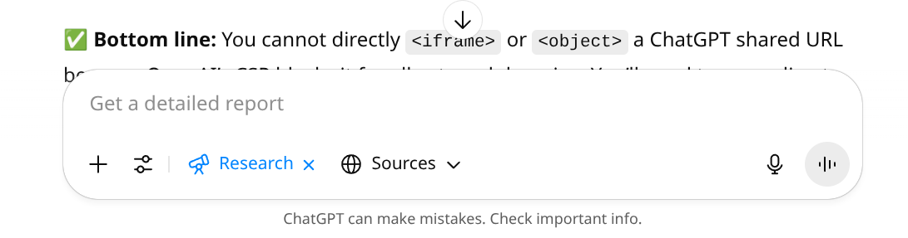
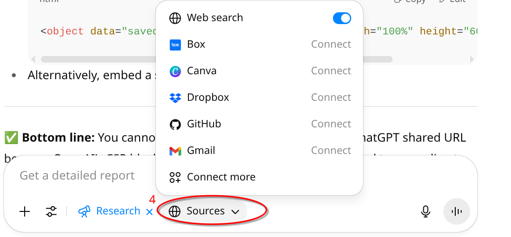

My first blog entry
I did a .fork of https://github.com/pflagerd/blog-bootstrap
An exploration of OpenAI's Deep Research
There's a meta-blog here where I track my progress on modifying/improving this blog's content.
Here's the Chat:
I am impressed!
I emailed Robin and also transfer $80 to his account.
1. You click onTools
2. A list appears and you click Deep research.
3. The prompt window at the bottom of the ChatGPT session changes to look something like the following:
4. I click on Sources, because I don't know what that is. It looks like this:
It seems appropriate to use the Sources it lists (in particular Web Search).
I guess the next step is to craft the research request. I'll leave that until the next post.
Here's the Chat:
This is all very nice, but it doesn't tell me how to use it.
This is a picture of the model number from the bottom of Robin's laptop.
Robin's computer is an Inspiron 15-5545.